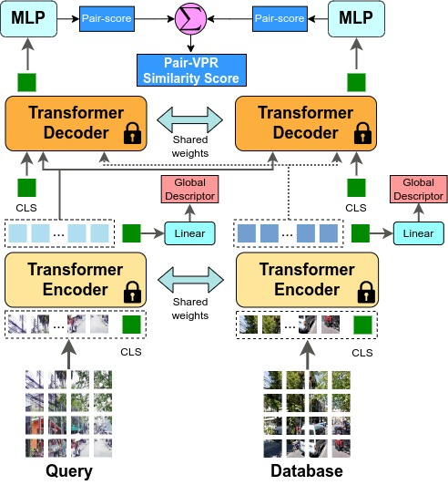
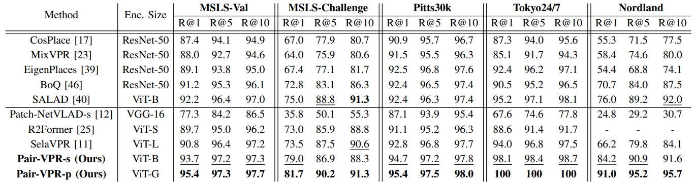
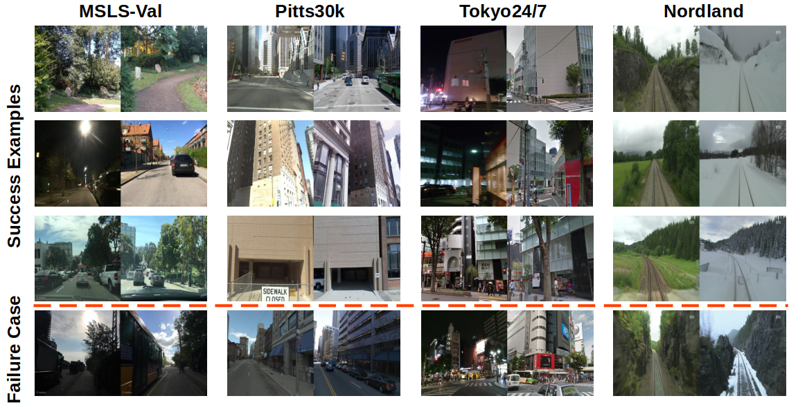

In this work we propose a novel joint training method for Visual Place Recognition (VPR), which simultaneously learns a global descriptor and a pair classifier for re-ranking. The pair classifier can predict whether a given pair of images are from the same place or not. The network only comprises Vision Transformer components for both the encoder and the pair classifier, and both components are trained using their respective class tokens.
In existing VPR methods, typically the network is initialized using pre-trained weights from a generic image dataset such as ImageNet. In this work we propose an alternative pre-training strategy, by using Siamese Masked Image Modelling as a pre-training task. We propose a place-aware image sampling procedure from a collection of large VPR datasets for pre-training our model, to learn visual features tuned specifically for VPR.
By re-using the Masked Image Modelling encoder and decoder weights in the second stage of training, Pair-VPR can achieve state-of-the-art VPR performance across five benchmark datasets with a ViT-B encoder, along with further improvements in localization recall with larger encoders.
Pair-VPR uses global descriptor database searching to generate a list of top candidates, then uses a pair classifier to estimate which is the best matching database image given a query image. Pair-VPR is trained in two stages as shown below.
During Stage 1 of training, we train a ViT encoder and decoder using siamese masked image modelling with place-aware sampling from large-scale and diverse VPR datasets. In Stage 2, we re-use both the pre-trained encoder and decoder and train specifically for the VPR task, jointly learning a global descriptor and a pair classifier.
After training Pair-VPR, it can be used to first generate global descriptors for every image, then for a list of top database candidates, the top candidates can be re-ranked using Pair-VPR.

Given a query and database image, encoded features are passed into the transformer decoder twice in alternating input orders, and the transformer decoder outputs a similarity score from the output of a class token. The two similarity scores are summed to produce the final Pair-VPR similarity score for a given pair. In practice, Pair-VPR can run in a batch where each batch is a tensor of query and database pairs, allowing re-ranking to be performed using a single forward pass through the Pair-VPR decoder.
We provide two variants of Pair-VPR: a performance version, Pair-VPR-p, and a speed version, Pair-VPR-s. The performance version has more top candidates and uses a ViT-G encoder. Both models achieve the highest Recall@1 result on the five benchmark VPR datasets, and the performance version is useful when accurate VPR is essential. The speed version allows for VPR retrieval with under 1 second latency.

We show qualitative results from Pair-VPR using the speed version. The examples include successes and a failure case per dataset, demonstrating that Pair-VPR can operate even with severe viewpoint shift, seasonal changes, and night-time imagery.

The published paper is available through IEEE Xplore, and the pre-print version is available on arXiv.
If you find this paper helpful for your research, please cite our paper using the following reference:
@article{hausler2025pairvpr,
author={Hausler, Stephen and Moghadam, Peyman},
journal={IEEE Robotics and Automation Letters},
title={Pair-VPR: Place-Aware Pre-Training and Contrastive Pair Classification for Visual Place Recognition With Vision Transformers},
year={2025},
volume={10},
number={4},
pages={4013-4020},
doi={10.1109/LRA.2025.3546512}
}